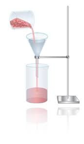
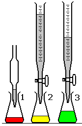
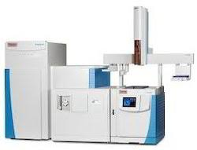
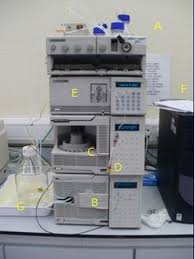
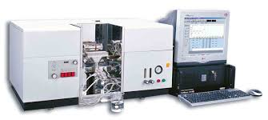
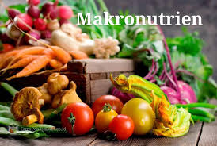

My Competency Certificates
-

Gravimetric Analysis
Gravimetric analysis is a method of quantitative chemical analysis in which the constituent sought is converted into a substance (of known composition) that can be separated from the sample and weighed.
-
Volumetric Analysis
Volumetric analysis is a method of quantitative chemical analysis in which the amount of a substance is determined by measuring the volume that it occupies or, in broader usage, the volume of a second substance that combines with the first in known proportions, more correctly called titrimetric analysis (see titration).

-
Microbiological Analysis
Microbiological analysis is the use of biological, biochemical, molecular or chemical methods for the detection, identification or enumeration of microorganisms in a material. It is often applied to disease causing and spoilage microorganisms. Impact of water or food.
-
Electrochemical Analysis
Electrochemical Analysis is a qualitative and quantitative methods of analysis based on electrochemical phenomena occurring within a medium or at the phase boundary and related to changes in the structure, chemical composition, or concentration of the compound being analyzed.
-

Gas Chromatography Analysis
Gas chromatography (GC) is a common type of chromatography used in analytical chemistry for separating and analyzing compounds that can be vaporized without decomposition. Typical uses of GC include testing the purity of a particular substance, or separating the different components of a mixture.
-
High Performance Liquid Chromatography Analysis
High-performance liquid chromatography or high-pressure liquid chromatography (HPLC) is a chromatographic method that is used to separate a mixture of compounds in analytical chemistry and biochemistry so as to identify, quantify or purify the individual components of the mixture

-

Spectrophotometric Analysis
Spectrophotometry is a method to measure how much a chemical substance absorbs light by measuring the intensity of light as a beam of light passes through sample solution. The basic principle is that each compound absorbs or transmits light over a certain range of wavelength.
-
Proximate Analysis
Proximate Analysis stands for a method, which determines the values of the macronutrients in food samples. In general, those values are being declared as nutritional facts shown usually on the labels of the final (end) food products, but they are also being determined during the production process. The beginning of the nutritional analysis originates back in 1861 and since then it has been continuously developed, modified and improved.

But... If I Have a Chance...
I Want To be a Programmer
For the first, I want to know about website programing. I learn HTML, CSS, Javascript, PHP, and MySQL. Now I am able to create a simple dynamic website.
Thank you
NIOMIC for your online coding bootcamp that really helped me.